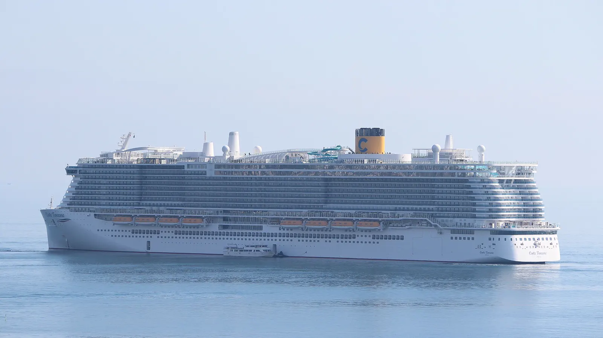

Cruise Hub
다른 선사
로얄 캐리비안
MSC 크루즈
카니발 크루즈
노르웨이지안 (NCL)
코스타
프린세스
셀러브리티
버진 보야지
홀란드 아메리카
아자마라
오세아니아
럭셔리
실버씨
리젠트 세븐시즈
크리스탈
Costa Cruises
코스타 크루즈 선단 상세 제원 및 리모델링 리포트 (2026)

엑셀런스 클래스 (Excellence Class)
Costa Toscana
건조년도
2021
톤수
186,364 GT
1인당 톤수 (GT/승객)
28.0
승무원당 승객
3.95
차세대 LNG 친환경 선박
Costa Smeralda
건조년도
2019
톤수
186,364 GT
1인당 톤수 (GT/승객)
28.0
승무원당 승객
3.95
리모델링: 2024
디아데마 클래스 (Diadema Class)
Costa Diadema
건조년도
2014
톤수
132,500 GT
1인당 톤수 (GT/승객)
26.8
승무원당 승객
3.93
리모델링:
2023**
콘코르디아 & 델리지오사 클래스
Costa Fascinosa
건조년도
2012
톤수
114,417 GT
1인당 톤수 (GT/승객)
30.1
승무원당 승객
3.43
리모델링: 2022
Costa Favolosa
건조년도
2011
톤수
114,417 GT
1인당 톤수 (GT/승객)
30.1
승무원당 승객
3.43
리모델링: 2023
Costa Deliziosa
건조년도
2010
톤수
92,720 GT
1인당 톤수 (GT/승객)
32.9
승무원당 승객
3.05
리모델링: 2024
Costa Pacifica
건조년도
2009
톤수
114,417 GT
1인당 톤수 (GT/승객)
30.1
승무원당 승객
3.43
리모델링:
2022**
Costa Serena
건조년도
2007
톤수
114,417 GT
1인당 톤수 (GT/승객)
30.1
승무원당 승객
3.43
리모델링:
2023**
포르투나 클래스 (Fortuna Class)
Costa Fortuna
건조년도
2003
톤수
102,587 GT
1인당 톤수 (GT/승객)
29.5
승무원당 승객
3.24
리모델링:
2018**
2026년 9월 선단 이탈 · Margaritaville at Sea Beachcomber로 개명